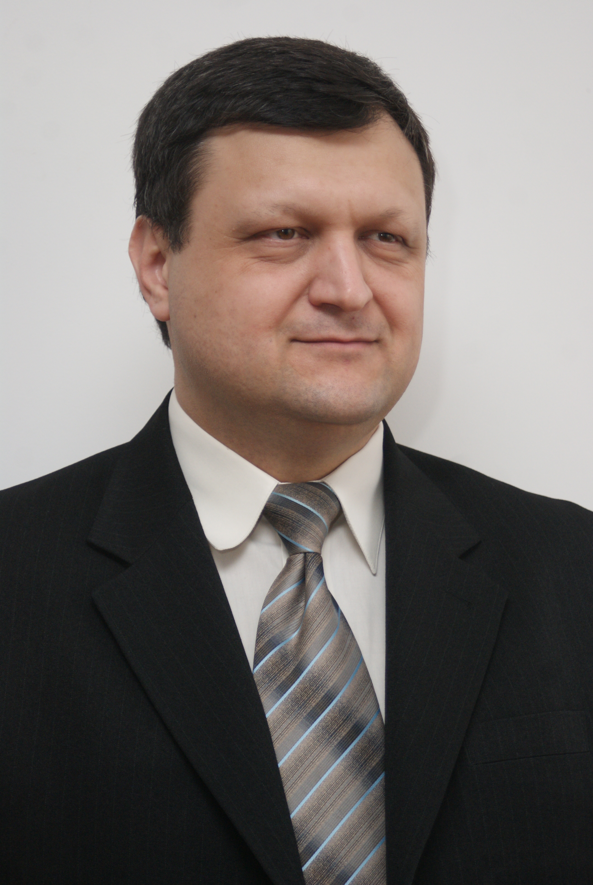
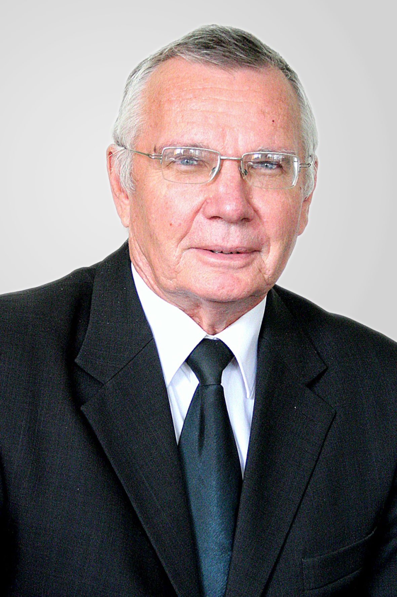
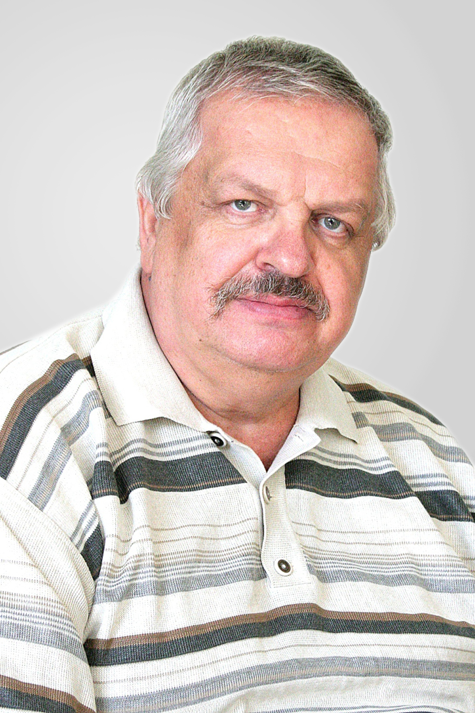
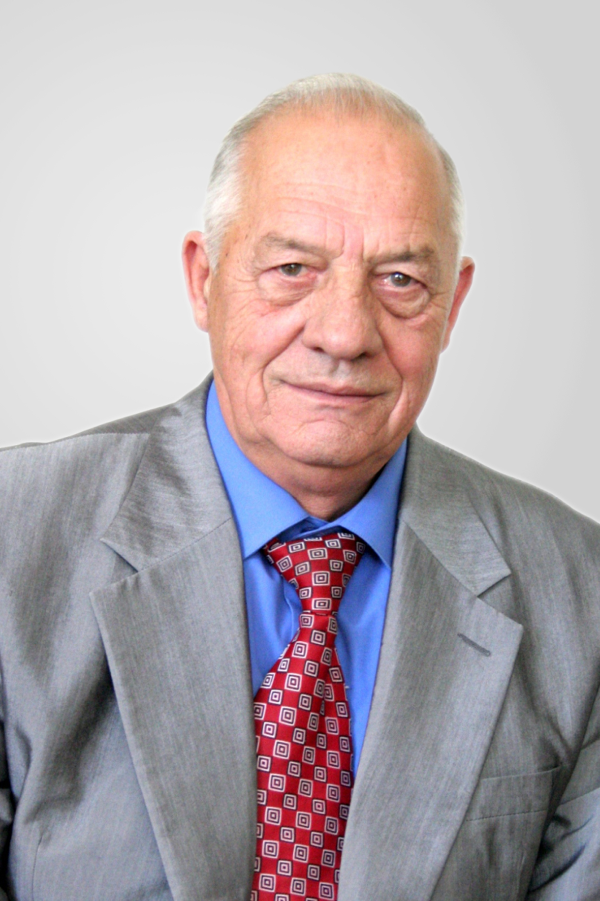
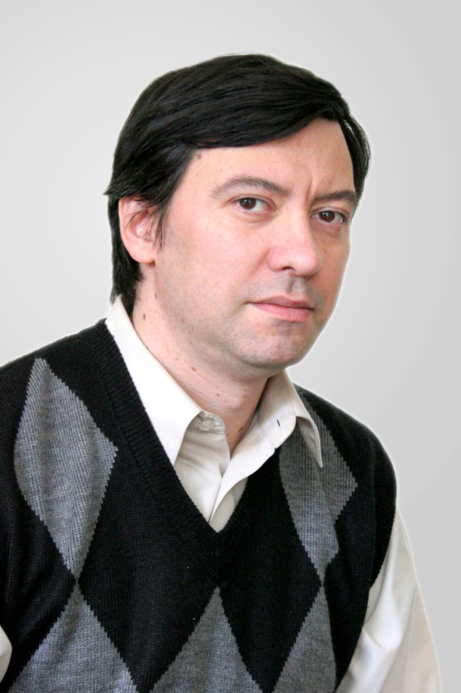

Олександр Вячеславович Троянський
Кандидат техн. наук, доцент.
- Захист інформації в телекомунікаційних мережах
- Інформаційні системи
Викладає:

Цевух Ігор Васильович
Кандидат техн. наук, доцент.
Викладає:
- Проектування пристроїв на ПЛІС
- Розробка програм для мобільних пристроїв
- Цифрові пристрої 2
- Цифрові пристрої

Аверочкін Володимир Олексійович
Кандидат техн. наук, доцент.
Викладає:
- Статистична радіотехніка
- Статистична радіотехніка в мобільному звязку
- Телекомунікаційні системи та мережі
- Цифрове оброблення сигналів
- Переддипломна практика
Кушніренко Олег Анатолійович
Старший викладач
Викладає:
- Датчики в радіоелектронних пристроях
- Локальні корпоративні мережі
- Основи комп'ютерного проектування телекомунікаційної апаратури
- Основи мережних інформаційних технологій

Медведик Анатолій Дем`янович
Кандидат техн. наук, доцент.
Викладає:
- Супутникові системи зв'язку
- Основи теорії надійності, експлуатації та ремонту РЕА
- Цифрові пристрої 1
- Основи телебачення та телевізійні системи
- Виробнича практика

Садченко Андрій Валерійович
Кандидат техн. наук, доцент.
- Волоконно-оптичні лінії та системи зв'язку
- Оптичні багатоканальні системи зв'язку з захистом інформації
- Теория та практика антен
- Теорія інформації та кодування
- Цифрові оптичні модеми та мережі
- Кваліфікаційна робота
Викладає:
Дорофєєв Юрій Миколайович
Старший викладач
- Обчислювальна техніка і програмування 2
- Обчислювальна техніка і програмування 1
- Операційні системи телекомунікацій
- Радіоавтоматика
Викладає:
Павлов Олексій Львович
Доцент кафедри
Викладає:
- Елементна база ЕОТ
- Обчислювальна техніка і програмування 1
- Обчислювальна техніка і програмування 2
- Програмування та алгоритмічні мови
- САПР електронних засобів
- Елементна база ЕОТ
- Обчислювальна техніка і програмування 1
- Обчислювальна техніка і програмування 2
- Обчислювальні та мікропроцесорні засоби 2
- Програмування та алгоритмічні мови
- САПР ЕОТ